Drapeau --sol-marque-essai, éteint par défaut. Le Cloître, 1920×1080, lacet 45° B, zoom du duel.
Chaque paire « sans / avec » est prise au même instant, jeu en pause (les marques retirées puis remises : A, B, A').
Rendu logiciel du cloud : les couleurs valent à ~1/255 du Mac ; aucune cadence ici.
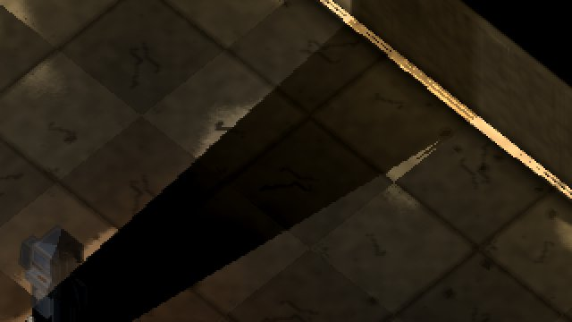
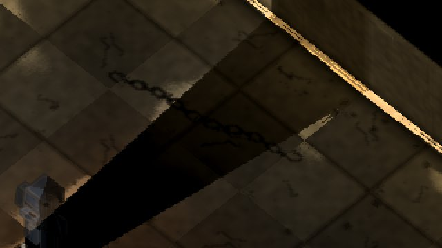
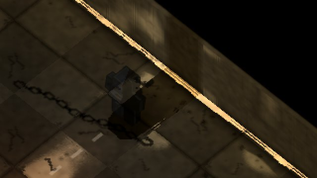
un tas allongé au pied du pilier, à une demi-case de lui : on n'en garde que l'ombre (noir à 38-60 %)
A − B : 10 816 pixels changent 10 029 plus sombres (−6.04 en moyenne) ; plus clairs : 0 de 2/255 ou plus 16 d'1/255 (l'arrondi). Bruit A − A' : 0. Noirs allumés : 0.
quelques débris sur un disque d'une case, dans la salle
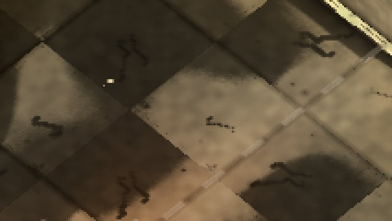
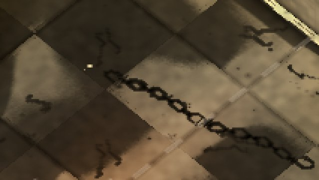
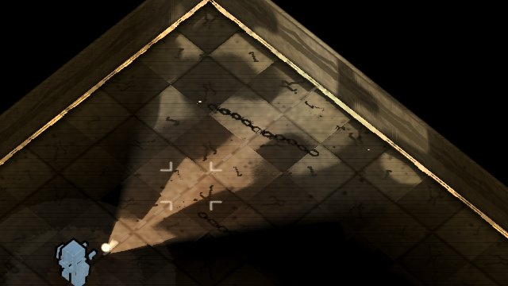
A − B : 8 396 pixels changent 7 810 plus sombres (−11.22 en moyenne) ; plus clairs : 0 de 2/255 ou plus 6 d'1/255 (l'arrondi). Bruit A − A' : 0. Noirs allumés : 0.
maillons à plat et de chant, en arc lâche, noirs à 60 %
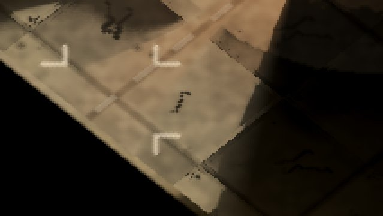
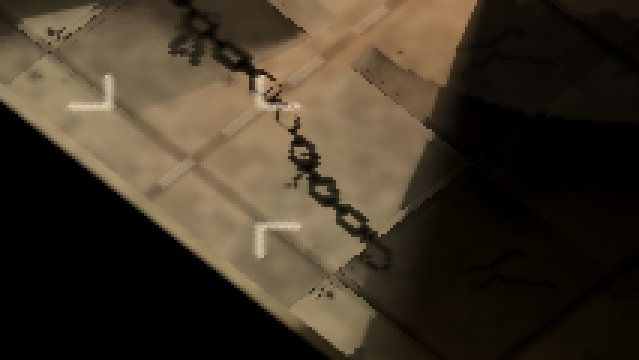
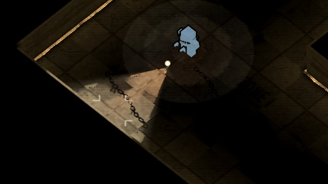
A − B : 12 301 pixels changent 11 486 plus sombres (−7.88 en moyenne) ; plus clairs : 0 de 2/255 ou plus 9 d'1/255 (l'arrondi). Bruit A − A' : 0. Noirs allumés : 0.
le cadre du « DEATHMATCH » nord, bandes de 3,5 px noires à 30 %, usées symétriquement
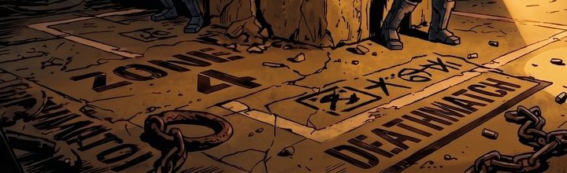
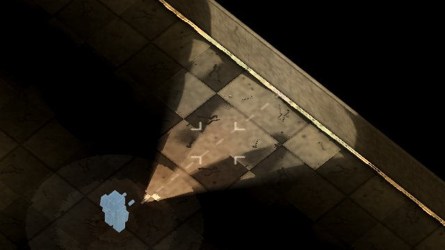
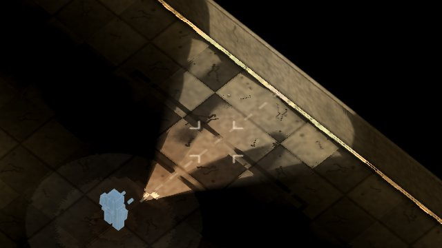
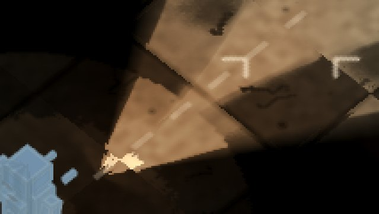
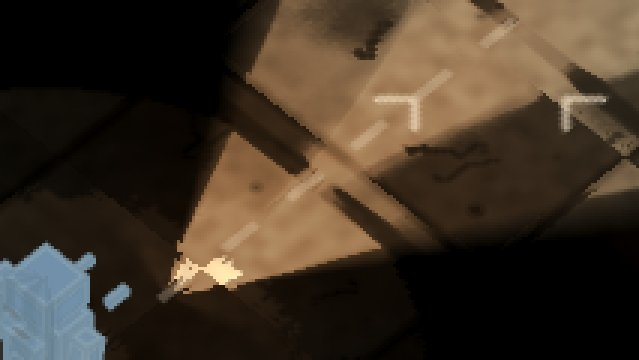
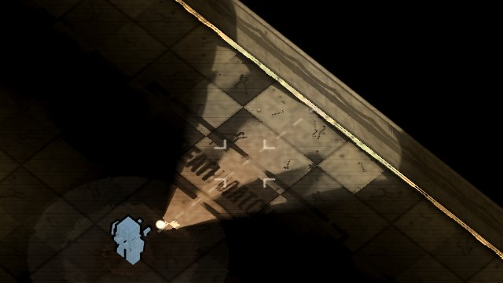
A − B : 11 227 pixels changent 10 533 plus sombres (−9.8 en moyenne) ; plus clairs : 0 de 2/255 ou plus 7 d'1/255 (l'arrondi). Bruit A − A' : 0. Noirs allumés : 0.
la bande de l'axe, entre les deux piliers du nord
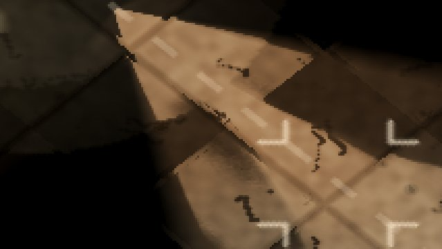
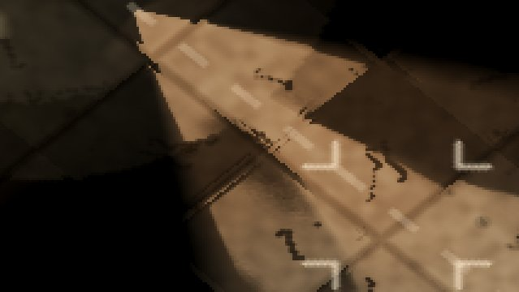
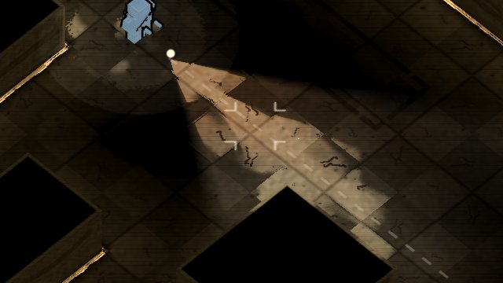
A − B : 13 949 pixels changent 13 003 plus sombres (−5.64 en moyenne) ; plus clairs : 0 de 2/255 ou plus 6 d'1/255 (l'arrondi). Bruit A − A' : 0. Noirs allumés : 0.
« B-07 », noir à 40 %, fonte des pochoirs à 14 px
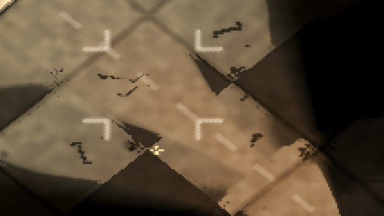
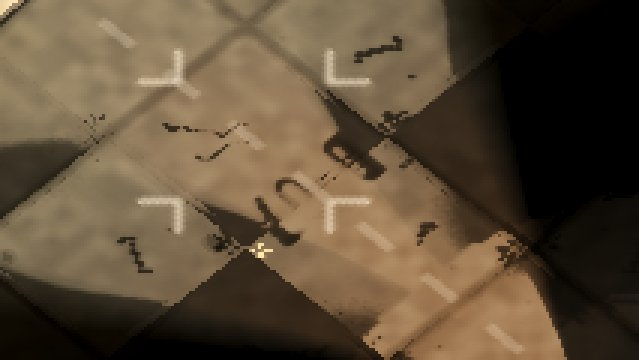
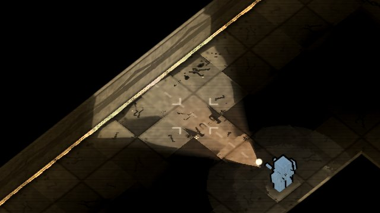
A − B : 7 267 pixels changent 6 699 plus sombres (−9.28 en moyenne) ; plus clairs : 0 de 2/255 ou plus 29 d'1/255 (l'arrondi). Bruit A − A' : 0. Noirs allumés : 0.
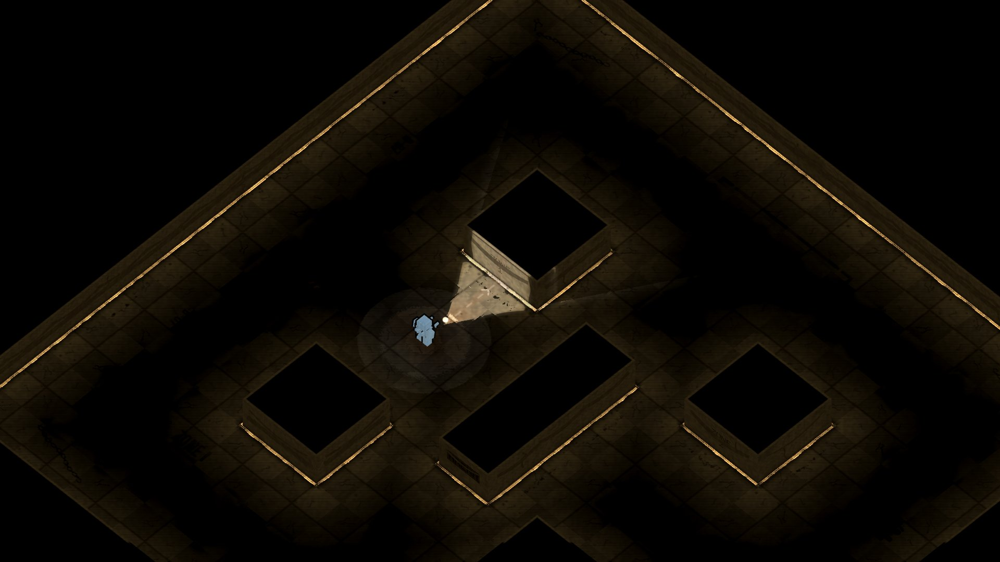
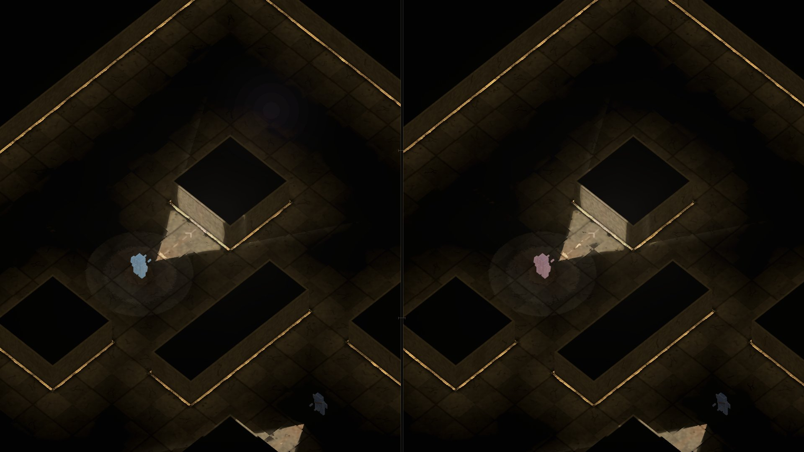
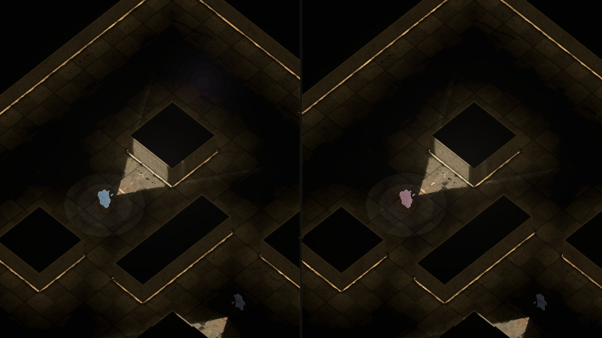